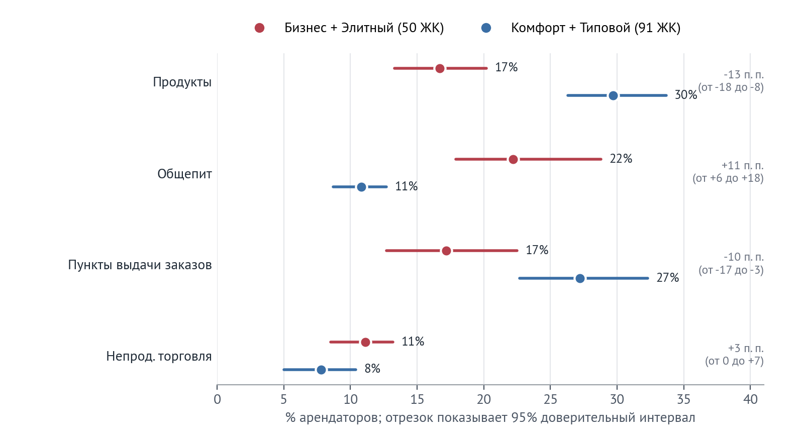
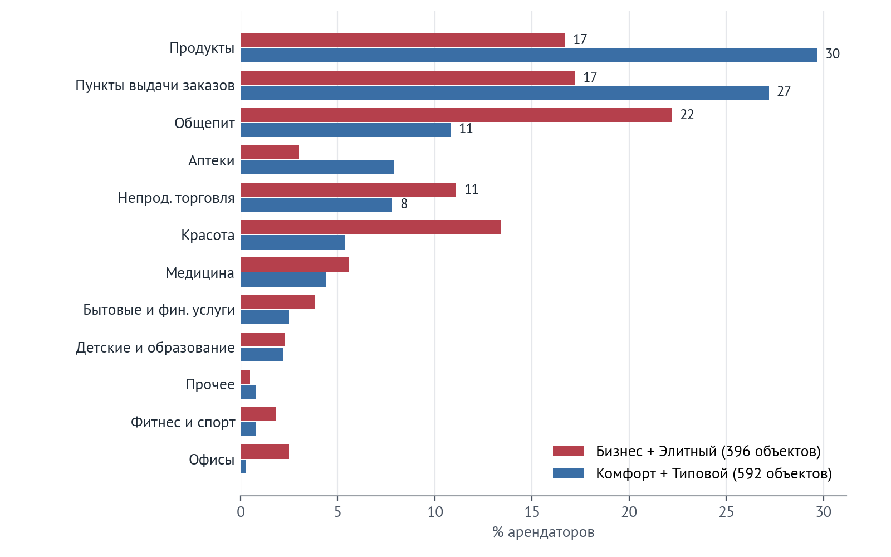
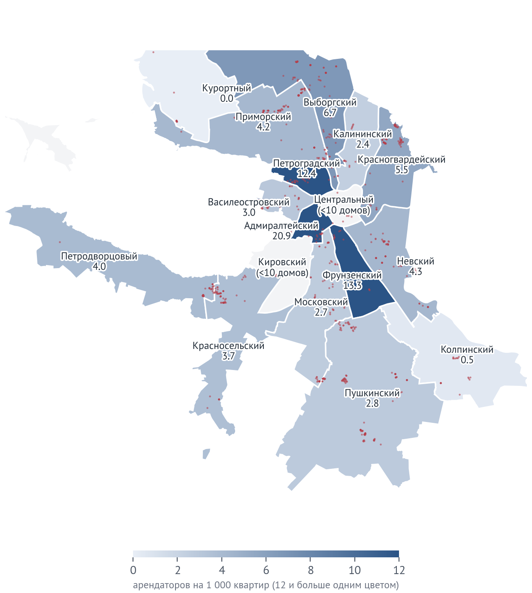

| 793жилых домов в 295 ЖК, 315 тыс. квартир | 956арендаторов на первых этажах 491 дома | 23%арендаторов составляют пункты выдачи заказов | −13 п. п.разница в доле продуктовых между бизнес- и комфорт-классом |
В обзоре NF GROUP по рынку бизнес-класса Петербурга за I полугодие 2026 г. сказано, что в нежилых помещениях бизнес-класса нежелательны общепит и продуктовые магазины (по данным NF GROUP). Цель работы: посмотреть, видно ли это в том, кто на самом деле арендует первые этажи уже заселённых домов.
Чаще всего первые этажи новых домов занимают продуктовые магазины (24% арендаторов) и пункты выдачи заказов (23%), вместе почти половина. По классам картина разная. В бизнес- и элитных ЖК продуктовых меньше (17% против 30% в комфорт- и типовом классе), общепита больше (22% против 11%).



Неожиданнее всего вышло с общепитом. По классификации он в бизнес-классе нежелателен, а в данных его там больше, чем в комфорте. Объяснение, скорее всего, в формате: фастфуда в бизнес-классе почти втрое меньше. С продуктовыми вывод слабее, чем кажется по первой цифре, потому что большую часть разницы даёт расположение домов. И ещё про пункты выдачи: в комфорт-классе это уже каждый четвёртый арендатор, так что застройщикам, видимо, имеет смысл заранее проектировать под них помещения с местом для хранения.
Выборка: 793 жилых домов из каталога ДОМ.РФ со статусом «сдан» и вводом в 2021–2025 гг., класс по фильтру ДОМ.РФ. Арендаторы: объекты OpenStreetMap не дальше 10 м от контура дома; учтены 491 домов, где контур найден и его этажность совпадает с ДОМ.РФ. Объект считается один раз на ЖК, интервалы посчитаны бутстрэпом по ЖК. Для проверки 10 ЖК сверены вручную с Яндекс Картами. Из 80 объектов, найденных в OSM, на месте 57 (71%). При этом в тех же домах Яндекс показывает 171 организаций, то есть OSM знает примерно 33% арендаторов. Поэтому в работе сравниваются доли, а не количество арендаторов. Подкласса «бизнес лайт» в ДОМ.РФ нет, он входит в «бизнес». Работа не связана с NF GROUP; их классификация цитируется по обзору «Рынок жилой недвижимости бизнес-класса. Санкт-Петербург. I полугодие 2026».